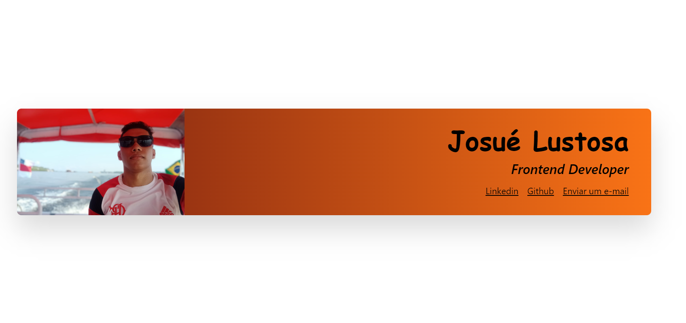
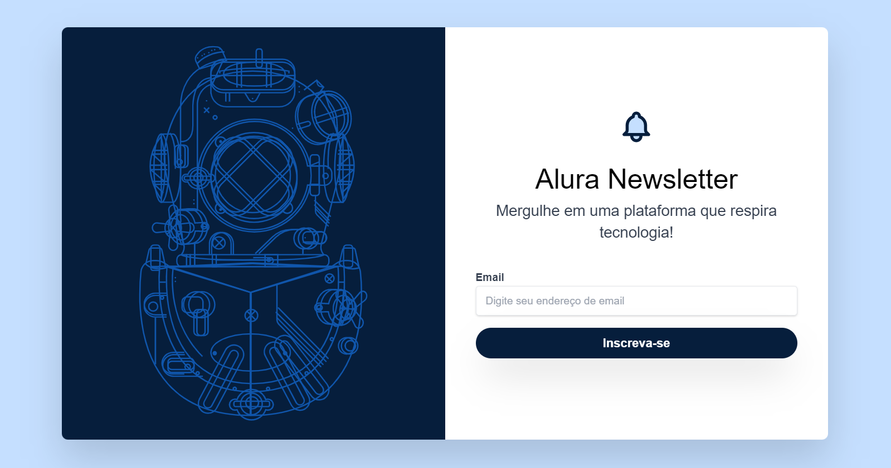

LISTA DE PROJETOS Seguem abaixo alguns projetos desenvolvidos no curso de Tailwindcss da Alura. Hello World Aplicação com funcionalidades iniciais, como resposividade, do Tailwind CSS. Acessar  Challenge Simples Cartão de Contatos desenvolvido com Tailwind CSS. Acessar  Alura Newsletter Página de captura de e-mail utilizando Tailwind CSS. Acessar